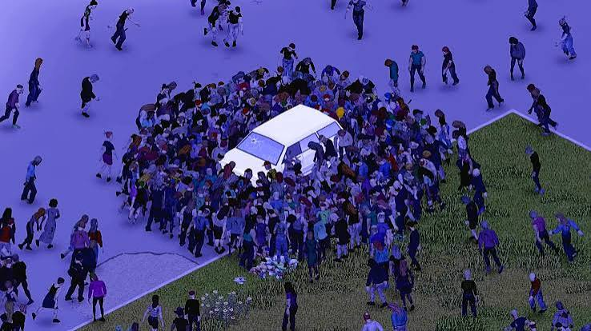
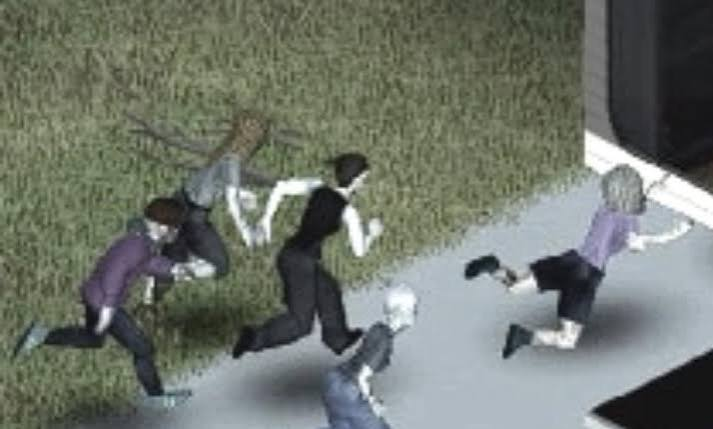
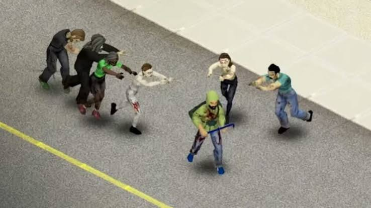
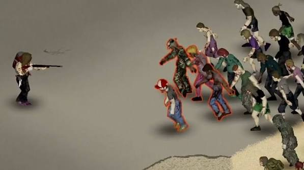
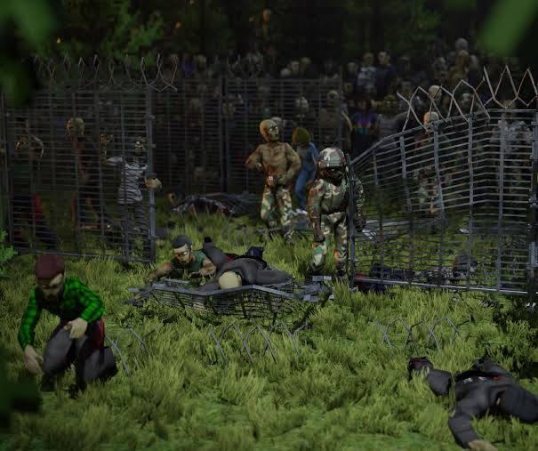
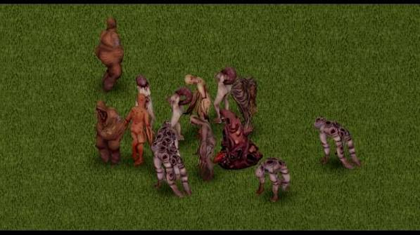
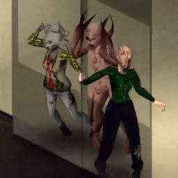

Início › Zumbis
Zumbis
Os zumbis (também chamados de “zeds” ou “infectados”) são a principal ameaça de Knox Country. Sozinhos são lentos, mas em grandes hordas se tornam o maior perigo do jogo.

Principais mecânicas
- Comportamento: por padrão os zumbis são lentos e só se tornam realmente perigosos quando cercam o jogador em grandes grupos.
- População: a concentração é muito maior nos centros urbanos, como Louisville, moderada nos arredores das cidades e baixa em áreas rurais.
- Combate e infecção: ao atacar, o zumbi agarra o sobrevivente. Mordidas garantem a infecção pela Doença de Knox; arranhões e lacerações infectam com menos frequência.
- Personalização: no modo Sandbox é possível alterar velocidade, força, sentidos (visão e audição) e o tamanho da população.
- Depois da morte: se o seu personagem morrer infectado e o corpo não for queimado, ele se levanta como um zumbi controlado pelo jogo.
Tipos de zumbis
O jogo não tem zumbis “mutantes” especiais. A PZwiki classifica os infectados pelo modo de se mover e pelas variantes de roupa e saque.
Por comportamento e velocidade
- Andarilhos (Shamblers): os zumbis lentos padrão, perigosos principalmente quando cercam o jogador.
- Andarilhos rápidos (Fast Shamblers): andam num passo próximo ao de uma caminhada rápida do personagem e são o padrão da maioria dos modos atuais.
- Rastejadores (Crawlers): ficam caídos e se arrastam sem fazer muito barulho, escondendo-se na grama alta ou em plantações. Podem derrubar o sobrevivente.
- Velocistas (Sprinters): correm na velocidade máxima do jogador e só aparecem em desafios específicos ou quando ativados no Sandbox.

Por traje e saque
- Civis comuns: camisetas, jeans e jaquetas, com itens básicos como relógios, carteiras ou joias.
- Profissionais e autoridades: policiais, bombeiros, médicos e detentos aparecem perto de seus locais de trabalho e carregam roupas de proteção ou ferramentas específicas.
- Sobreviventes e militares: variantes mais raras, com camuflagem, capacetes, armaduras e mochilas grandes com comida, armas e mapas anotados.
- Raros e easter eggs: personagens da cultura pop (Jason Voorhees, Rick Grimes), mascotes como o Spiffo e figuras da história do jogo, como os repórteres Jackie Jaye e Frank Hemingway.

Como lidar com cada tipo
O segredo é controlar distância e posicionamento, adaptando a tática à velocidade de cada variante.
Andarilhos e andarilhos rápidos
- Ande para trás enquanto ataca: a caminhada em postura de combate mantém a distância sem gastar vigor.
- Empurre e pisoteie: use a barra de espaço para derrubar e o botão esquerdo, mirando a cabeça, para finalizar sem gastar a durabilidade da arma.
- Use cercas baixas e janelas: os zumbis caem de bruços ao pular e ficam vulneráveis por alguns segundos.
- Divida a horda: evite enfrentar mais de três ou quatro ao mesmo tempo em campo aberto e quebre a linha de visão com esquinas e árvores.

Rastejadores
- Ative o contorno de mira: a opção Aim Outline ajuda a enxergar rastejadores escondidos na grama.
- Não passe pela frente: o ataque deles pode agarrar suas pernas e derrubar o personagem.
- Ataque por trás ou pelos lados: pela retaguarda eles não conseguem girar rápido para morder.
- Deixe-os por último: se houver zumbis em pé, resolva primeiro os mais rápidos.
Velocistas
- Evite combate aberto: nunca enfrente mais de dois sem uma barreira física.
- Abuse de cercas e janelas: fique logo depois do obstáculo e golpeie quando eles caírem ao atravessar.
- Use carros como escudo: estacione encostado em uma parede ou árvore e lute pela janela para não ser cercado.
- Feche as portas na fuga: cada porta fechada atrasa a perseguição e dá tempo de sair pelos fundos.
Onde achar os zumbis mais bem equipados
Locais fixos (zumbis militares)
- Posto de controle de Louisville: na entrada sul da cidade, com dezenas de militares e tendas cheias de caixas de armas, coletes e mochilas.
- Base militar secreta (oeste de Rosewood): no fim de uma longa estrada de terra na floresta, com alta densidade de soldados e as melhores roupas táticas.
- Quartéis ao norte de Rosewood: complexo mais acessível, com soldados de coletes balísticos e mochilas militares.
- Loja de excedentes militares: a noroeste do mapa, perto de Doe Valley e Fallas Lake.
- Delegacias e quartéis de bombeiros: os pontos mais seguros no começo do jogo para achar policiais (coldres e pistolas) e bombeiros (roupas resistentes).

Sobreviventes zumbificados (eventos aleatórios)
- Casas barricadas: abrigam zumbis com mochilas grandes, machetes, machados e armas de fogo.
- Bloqueios na estrada: acidentes com viaturas, ambulâncias ou veículos militares costumam ter zumbis equipados por perto.
- Invasões militares: em algumas casas e prédios há corpos no chão junto de soldados zumbificados com equipamento tático completo.
Aparência
- Pele e ferimentos: pele pálida ou esverdeada, com sangue, mordidas e arranhões espalhados pelo corpo e pelas roupas.
- Decomposição: com o passar dos meses os zumbis ficam mais magros e de pele escura. É um efeito apenas visual, sem alterar força, velocidade ou comportamento.
- Postura: caminham curvados e mancando, e alguns surgem caídos para se arrastar pelo chão.
- Roupas: são mais de 150 conjuntos definidos pela região do mapa, como uniformes médicos em hospitais e macacões em oficinas, quase sempre sujos, rasgados ou furados.
- Acessórios: relógios, joias, óculos, chapéus, mochilas e até facas, chaves de fenda ou machetes cravados no corpo.

